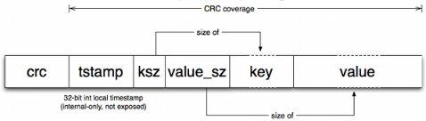
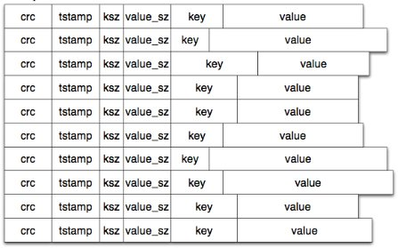
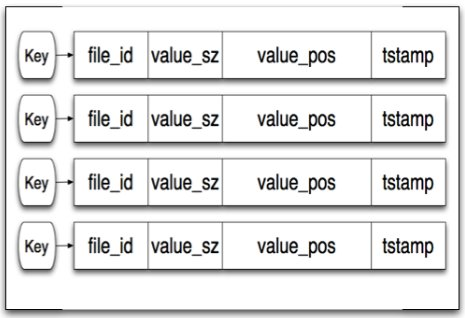

来自riak的bitcast
Table of Contents
1 bitcask是啥？
bitcask来自于riak，是一个日志（log-structured）存储系统。用在riak的分布式数据库的底层key-value的存储。
2 bitcask的存储模型
bitcask的存储模型抽象之后非常简单。
-
insert过程
一个bitcask就是一个文件夹。任意时间点，只会有一个进程来写这个文件夹中的一个文件。所有对文件的写操作都以追加的形式执行。这样的好处是不需要在磁盘上寻找数据，所有的操作都是顺序地写。每次都会写入一个记录的实体。更改和删除也只是新数据的追加。每个数据实体的结构如下

- crc是数据体的校检码
- tstamp是时间戳
- ksz是key的长度
- valuesz是value的长度
- 最后紧接着key和value
一个文件由顺序的一系列数据实体构成，如下  此外，内存中会存着一份key的列表，如下  insert的时候，key的指向会随时根据添加指向最新的数据。旧的数据依旧保留在磁盘上。当文件达到一定大小，它将被关闭。
- merge过程 merge操作会清除旧的文件数据
3 小结
bitcask是一个典型用空间换时间来提高写入性能的产品。因为省去了磁盘seek时间，io性能很好。而且在写入数据的时候不修改数据，不会产生碎片，所以也就省去了让人讨厌的碎片清理的过程。 但是它的缺点也显而易见，由于数据清理都统一在merge过程中做，这时延迟会比较明显。这也是各种类似bitcask思路的存储系统实现各显神通的地方了。优化方法比较好想，比如只merge已经被关闭的文件等，这里就不赘述了。
4 参考
bitcask intro, http://downloads.basho.com/papers/bitcask-intro.pdf
Date: 2012-03-19 14:56:02 CST
HTML generated by org-mode 6.33x in emacs 23